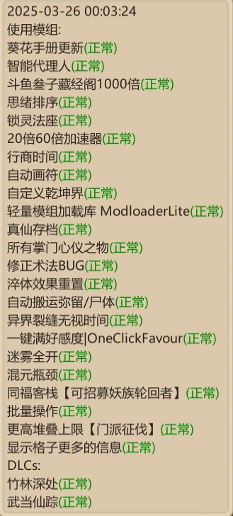
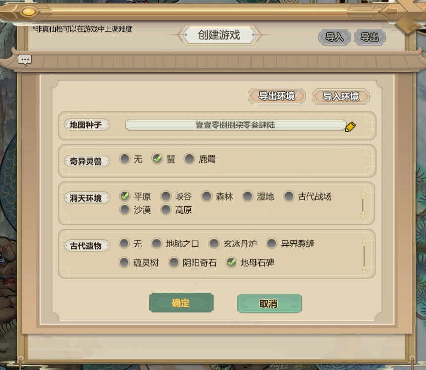
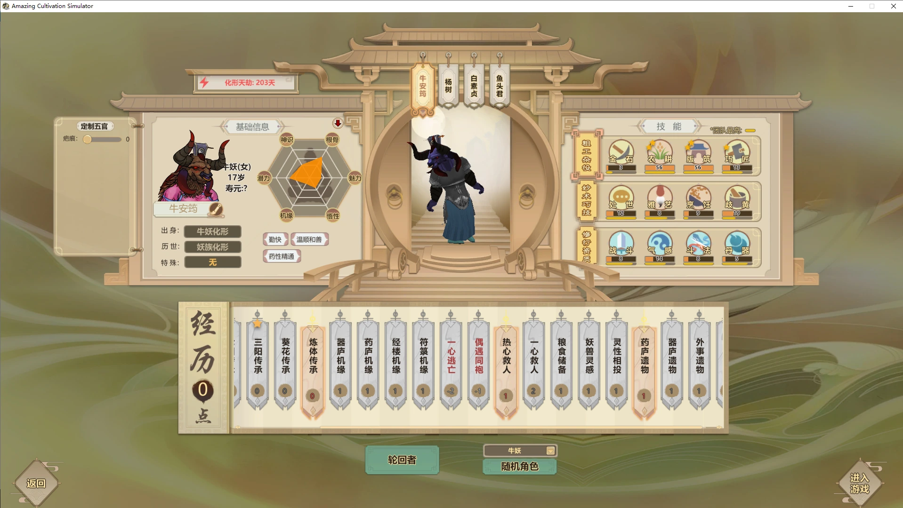
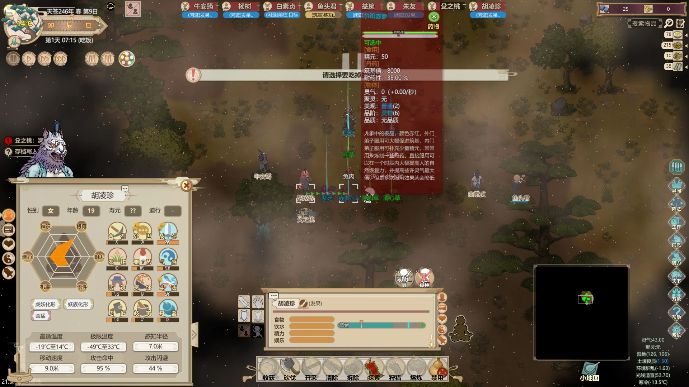
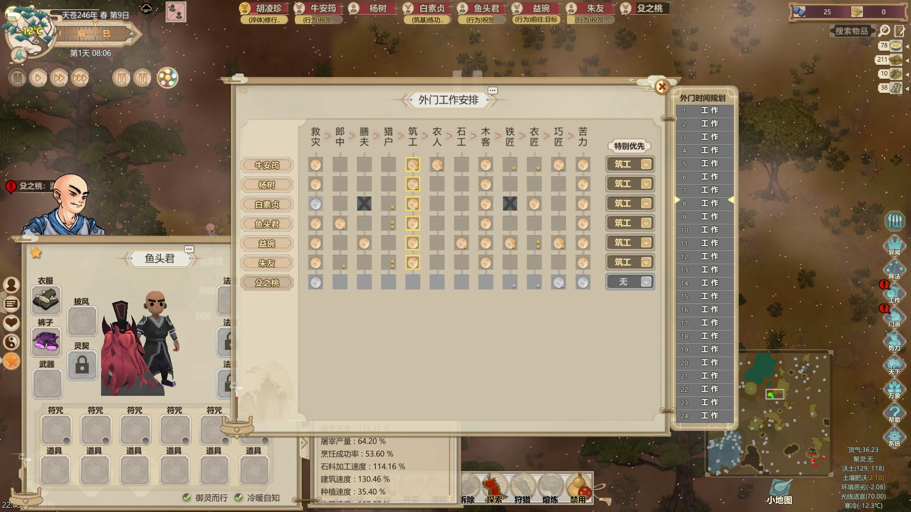

确定玩法与开局配置
采用体修起步、逐步转向仙修的正道路线；地图、遗物、模组和人员都在下方逐项保留。选牛带队，关注化形天劫、巧匠热爱与雅艺；带体修功法、热心救人、药庐遗物。
按所用开局或培养方案查阅对应做法。
正文说白素贞不可换，但作者后来补充可以用巧克力等能拿道统的人替代；选牛时还要关注雅艺与两星巧匠。
查看来源- 适用人物
- 开局选人界面
- 前置 / 物资
- 地图种子、地母石碑、药庐遗物；牛妖带队
- 01确认难度、人数限制和时间约束
- 视频采用经典模式、普通真仙，未勾全九劫条件；原帖80天四妖兽目标仍只适用于原帖九劫路线。
视频出处（可选，正文与图片已保存在本页）
来源 01集 00:07:07 ↗
- 视频采用经典模式、普通真仙，未勾全九劫条件；原帖80天四妖兽目标仍只适用于原帖九劫路线。
- 02选择正道路线：不偷东西、不烧大能、不建刻意杀凡人的大凶山门；先用体修赚取资金，再发展仙修。
- 视频自定纯正道边界：不偷门派物品、不杀正道大能、不烧大能、不夺舍。原帖、视频与评论里的其他玩法不自动变成你的必做任务。
视频出处（可选，正文与图片已保存在本页）
来源 01集 00:07:07 ↗
- 视频自定纯正道边界：不偷门派物品、不杀正道大能、不烧大能、不夺舍。原帖、视频与评论里的其他玩法不自动变成你的必做任务。
- 03地图按原帖选取；原文提供“壹壹零捌捌柒零叁肆陆”，另补“多宝轮回宗”“封狼居胥”。不同种子不能默认拥有相同掌门喜好和资源。
- 04遗物选地母石碑，用于后续灵石与妖兽资源循环；蜚用于尝试获取玄牝珠，未出珠也可以继续。
- 05随机牛妖带队，检查化形天劫不要太近；版筑、巧匠至少一个热爱且上限至少20。按后续经验优先两星巧匠、雅艺较高的牛。
- 06开局经历选体修功法、热心救人、药庐遗物。药庐遗物提供前期入门所需药物，不要漏选。
- 07带杨树、白素贞、鱼头君。白素贞负责道统、杨树负责开图；后续补充允许合适替代者，并非所有名字都必选。
- 08核对原图模组清单与武当仙踪等DLC。原帖模组并非全部必需；不用一键好感时，先阅读杨树体修与何足道交谈的替代流程。
- 开长期档时视频建议大地图，并开启建造辅助线；视频默认不开局依赖匪与快速仙家洞天。手游与端游的模组/拓展包条件分别检查。
视频出处（可选，正文与图片已保存在本页）
来源 01集 00:07:07 ↗
- 开长期档时视频建议大地图，并开启建造辅助线；视频默认不开局依赖匪与快速仙家洞天。手游与端游的模组/拓展包条件分别检查。
- 09给三阳开局者筑基并入内门
- 视频让飞羽装备并吃赤参、紫芝各两个，再晋升内门修三阳；这是仙修起步，不能套到原帖体修淬炼步骤。
视频出处（可选，正文与图片已保存在本页）
来源 04集 00:02:05 ↗
- 视频让飞羽装备并吃赤参、紫芝各两个，再晋升内门修三阳；这是仙修起步，不能套到原帖体修淬炼步骤。
- 10检查入门后的御器初始等级
- 入内门前另存新档，检查斗法随机分配后的御器、术法、护体等级。飞羽优先御器，负责历练；守家七杀的初始等级优先级另见第37集。
视频出处（可选，正文与图片已保存在本页）
来源 04集 00:02:05 ↗
- 入内门前另存新档，检查斗法随机分配后的御器、术法、护体等级。飞羽优先御器，负责历练；守家七杀的初始等级优先级另见第37集。
- 11确认本路线的前期节点
- 视频第16天前目标是取符修、双符修培养、开图和赚交易物；其约80天说的是妖族化形倒计时示例，不能替换原帖固定第80天来袭。
视频出处（可选，正文与图片已保存在本页）
来源 04集 00:02:05 ↗
- 视频第16天前目标是取符修、双符修培养、开图和赚交易物；其约80天说的是妖族化形倒计时示例，不能替换原帖固定第80天来袭。
保存一份开局档，确认人员与传承设置齐全
原帖原文、数值与答疑 5 楼 · 5 图
真没想到最近还有如此多新人加入这个游戏。有感于新人入门苦难，甚至被劝退，特此发布本攻略。
本攻略特点如下：
1、简单易懂，新人无障碍
2、正道玩法，不偷东西，不烧大能，不建大凶山门（禁止一切刻意杀戮凡人的手段）
3、体修开局，慢慢过渡到仙修
4、不追求效率，稳扎稳打
5、慢更
首先是模组，基本都是功能性模组
原图 001 · 展开图片 / 点击放大

其中锁灵法座、行商时间本次不会使用，同福客栈用于招轮回者
展开 17 条楼中楼回复
hughshade (2025-03-26 00:13:11): 虽然我也觉得轮回者挺好的，但你这个攻略不建议用吧，轮回者里有些比mod BT多了
催更教教主😂 (2025-03-26 00:14:58): 回复 @hughshade :没用变态轮回者呀[表情:呵呵]，都是本体内允许出现的轮回者。完全不用轮回者对萌新来说有点强人所难了。
催更教教主😂 (2025-03-26 00:16:22): 回复 @hughshade :同福客栈里我只会招两个自己捏的小人，非满属性，只是用本体有的经历，做大哥。比满思绪老虎差十条街
催更教教主😂 (2025-03-26 00:18:42): 回复 @hughshade :如果大家都不想看轮回者，后续我也可以不用[表情:哈哈]
长河丶落日灬 (2025-03-26 03:38:29): 我就没用过，不偷不抢不舔不烧不大凶门，纯正档，以前辅助MOD都不打，最近被九劫档搞的太累的，就打了几个辅助的，不影响游戏难度那种
卡比大怪兽℃ (2025-03-27 05:40:37): mod太多了。。
催更教教主😂 (2025-03-27 05:43:47): 回复 @卡比大怪兽℃ :没有影响平衡的mod
催更教教主😂 (2025-03-27 05:54:55): 回复 @卡比大怪兽℃ :另外，这些mod没有哪个是必须的，如果不喜欢可以不开
卡比大怪兽℃ (2025-03-27 06:27:17): 回复 @催更教教主😂 :嗨，也是，不过这mod一开好多人就忍不住开更多，然后开到不想玩了
贴吧用户_JRtE18y (2025-06-11 04:45:27): 看到这一堆不是更劝退，稍微打几个一键好感批量操作得了搞这么多
贴吧用户_JRtE18y (2025-06-11 04:46:17): 这都二三十了，还玩个啥
ssssssdhhhhhh (2025-06-26 22:23:21): 这种学习成本高的游戏，其实挺推荐新手通天商会mod的，可以慢慢玩，熟悉游戏
铅笔大小明 (2025-10-22 04:16:01): 可以把mod打包分享一下么
催更教教主😂 (2025-10-22 04:58:03): 回复 @铅笔大小明 :直接游戏内可以下载
最后的祸 (2025-11-30 05:08:40): 同福客栈还能用吗
kan華 (2026-01-12 01:29:05): 好多wegame没有😭
VictorSinCrow (2026-01-14 18:45:37): 大佬你的更多格子信息是哪个作者的，我的不显示温度
其次选择最强遗物：地母石碑。这是正道玩法批量获取元神妖兽产物的唯一方法
蜚则是赌一手玄牝珠，出了好，不出也无所谓
壹壹零捌捌柒零叁肆陆
原图 002 · 展开图片 / 点击放大

补充地图种子
- 种子：多宝轮回宗
- 种子：封狼居胥
展开 6 条楼中楼回复
冬瓜♤ (2025-03-26 12:59:18): 邪道档也有搞妖兽的方法吗，我以为这个只能干等
催更教教主😂 (2025-03-26 15:23:06): 回复 @冬瓜♤ :邪道也可以用地母石碑啊，正道能用的，邪道都能用
遥远的过去 (2025-03-31 07:58:45): [表情:开心]地母是真的强，12阶老虎坐骑自由
催更教教主😂 (2025-03-31 08:35:21): 回复 @遥远的过去 :是的
周煌杰😍 (2025-09-08 01:45:39): 用不到吧，直接练工具人到元神夺舍老虎，化形突破让他失败变成妖兽直接打死
催更教教主😂 (2025-09-08 05:39:32): 回复 @周煌杰😍 :看标题，正道
接下来是开局选择，随机一只牛牛带队，要求：
1、化形天劫不能太近
2、版筑、巧匠至少一个热爱，且等级上限至少20
3、选择体修功法、热心救人、药庐遗物
4、带杨树（后期掌门，可换其他）、白素贞（不可换）、鱼头君（前期打手，可换）
原图 003 · 展开图片 / 点击放大

展开 14 条楼中楼回复
口胡MAX (2025-03-25 18:23:28): 为什么，不用无敌的飞羽仙狂
催更教教主😂 (2025-03-25 18:32:20): 回复 @口胡MAX :1、飞羽仙狂乃邪魔外道，正道攻略怎能带他？2、论做掌门和练太上忘情诀，杨树完爆飞羽，杨树的处事是满值20
hughshade (2025-03-26 00:12:00): 回复 @口胡MAX :他是体修开局，21天才有三阳火，飞羽的模板基本是完全按三阳火功法定制的
催更教教主😂 (2025-03-29 17:54:11): 突然想起来，正道开局可以把白素贞换成巧克力（猫妖女），也能拿几乎所有道统（偷天决有些困难）
催更教教主😂 (2025-04-04 03:19:02): 楼主选牛的时候没注意它的雅艺，后续做胚子吃了不少苦头，大家最好还是选一个雅艺稍微高一些，且巧匠两颗星的牛吧，这样舒服很多
▫北尘▫ (2025-05-27 23:55:31): 这几个人刷不出来怎么办
1028410617 (2025-05-28 09:19:45): [表情:捂嘴笑][表情:捂嘴笑]树哥死啦
大能能🐼 (2025-07-24 17:00:24): 回复 @1028410617 :sgsl[表情:哈哈]
yellow魚 (2025-08-27 17:40:10): 回复 @▫北尘▫ :有名字的是轮回者
oponpvq57328 (2025-09-12 01:53:12): 千小茜嘴炮 好厉害
贴吧用户_G9GGb2y (2025-12-30 16:26:05): 我是萌新不太懂，为啥不选鸡妖？鸡妖睡觉少还勤快干活
催更教教主😂 (2025-12-31 02:30:56): 回复 @贴吧用户_G9GGb2y :干活就得牛
虚名古人☜ (2026-06-23 19:58:59): 杨树换千小茜怎么样？
催更教教主😂 (2026-06-24 02:56:11): 回复 @虚名古人☜ :可以，开局人选除了拿道统那个都不是必须的。甚至可以全随机[表情:滑稽]开发中
开始，我们运气很好，给了一只猪一只虎（只要没有乌龟就能接受）
原图 004 · 展开图片 / 点击放大

随便安排一下工作
原图 005 · 展开图片 / 点击放大

展开 11 条楼中楼回复
废物一个🍦 (2025-03-25 16:48:38): 九劫开局仍建议在第一次进入“天下”前存档刷各派交易，不然真灵丹、天道本源、仙人遗骨、造化玉籽、灵源种一个都没有就知道痛苦了
催更教教主😂 (2025-03-25 17:04:58): 回复 @ :咱们这是萌新教程，只要能通关就行，不追求那些[表情:呵呵]
迷之递皂者 (2025-03-25 19:06:04): 回复 @ :可以打个那个增加门派交易物品的mod
Nimetazepam (2025-04-03 07:14:44): 楼主，请问是怎么能给除了开局四个人以外的小人呀
催更教教主😂 (2025-04-03 17:35:40): 回复 @Nimetazepam :九劫会多给几个，还有个脑残（字面意思）的拖油瓶
Nimetazepam (2025-04-03 18:29:20): 回复 @催更教教主😂 :[表情:小乖]原来是这样！感谢
贴吧用户_JUN9b2e (2025-08-28 07:10:33): 回复 @催更教教主😂 :所以大佬在尝试教我打九劫真仙
当当丶猫 (2025-12-01 20:28:52): 看乌龟救人真是急死个人，真怕没把人抱到宿舍那人就挂了[表情:笑眼][表情:笑眼][表情:笑眼]
微醺狸猫💫 (2025-12-17 04:10:21): 回复 @当当丶猫 :哈哈哈哈，有画面感了
微醺狸猫💫 (2025-12-17 04:11:46): 强烈建议弄个门派交易种类增多的mod，不然真的为了宁珀sl到头疼
RAKI墨😈 (2026-01-27 10:18:12): 前几天开个档，乌龟经常在去吃饭路上饿晕[表情:汗][表情:汗]如此循环